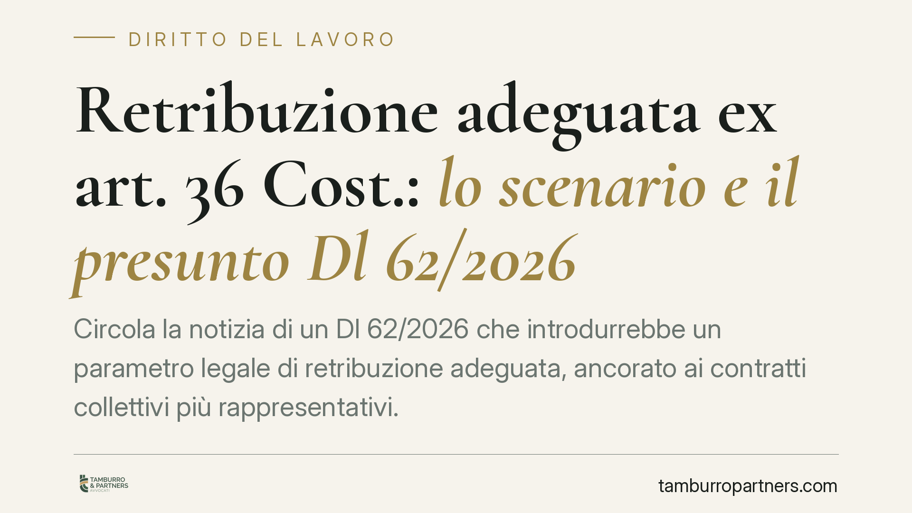

Retribuzione adeguata ex art. 36 Cost.: lo scenario e il presunto Dl 62/2026
Circola la notizia di un Dl 62/2026 che introdurrebbe un parametro legale di retribuzione adeguata, ancorato ai contratti collettivi più rappresentativi. Allo stato il testo non risulta reperibile in Gazzetta Ufficiale. Trattiamo quindi la questione come scenario, non come diritto vigente, perché il tema della retribuzione proporzionata ex art. 36 Cost. è già oggi centrale per imprese e lavoratori.

Premessa: una norma ancora da verificare
Una precisazione doverosa prima di entrare nel merito. Il cosiddetto Dl 62/2026 citato da alcune fonti divulgative non risulta, allo stato, reperibile in Gazzetta Ufficiale né confermato come provvedimento vigente.
Per questa ragione ne parliamo al condizionale e lo usiamo solo come ipotesi di lavoro. Ciò che segue non è la guida a una legge in vigore, ma un'analisi dello scenario normativo sulla retribuzione adeguata. Invitiamo a non assumere decisioni aziendali sulla base di un testo non ancora ufficiale.
Inquadramento normativo
Il punto di partenza, questo sì consolidato, è l'art. 36 della Costituzione: il lavoratore ha diritto a una retribuzione proporzionata alla quantità e qualità del lavoro e comunque sufficiente ad assicurare a sé e alla famiglia un'esistenza libera e dignitosa.
Su questa base la giurisprudenza del lavoro ha, nel tempo, utilizzato i minimi tabellari dei contratti collettivi nazionali come parametro per verificare l'adeguatezza di una retribuzione. Il giudice, cioè, può dichiarare inadeguata una paga e ricondurla ai livelli contrattuali, con un margine di valutazione proprio.
Va ricordato l'art. 39 Cost., che disciplina la libertà sindacale e l'efficacia dei contratti collettivi: è la ragione per cui in Italia non esiste un salario minimo legale generalizzato imposto per legge.
Sul piano europeo rileva la Direttiva (UE) 2022/2041 del 19 ottobre 2022, relativa a salari minimi adeguati nell'Unione. Attenzione a un equivoco diffuso: la direttiva non impone all'Italia un salario minimo legale. Chiede, piuttosto, di promuovere la contrattazione collettiva e di garantire adeguatezza, lasciando agli Stati con forte copertura contrattuale – come il nostro – ampi margini di attuazione.
Cosa cambierebbe nello scenario ipotizzato
Se un intervento del tipo descritto venisse effettivamente adottato, il cambiamento sarebbe di metodo più che di principio.
Oggi l'adeguatezza della retribuzione è frutto di elaborazione giurisprudenziale caso per caso. Lo scenario ipotizzato introdurrebbe invece categorie legali definite: un "contratto leader", cioè il contratto collettivo comparativamente più rappresentativo nel settore, come riferimento vincolante, e un parametro agganciato al trattamento economico complessivo.
Sono terminologie da maneggiare con cautela: non sono ancora categorie ufficiali del nostro ordinamento. Le riportiamo perché presenti nelle fonti divulgative, non perché consolidate.
L'effetto pratico, se confermato, sarebbe duplice. Da un lato, le imprese dovrebbero allineare le buste paga a un parametro più oggettivo e meno contestabile. Dall'altro, si ridurrebbe la discrezionalità del giudice del lavoro, che avrebbe un riferimento normativo più stringente rispetto all'attuale valutazione equitativa.
Implicazioni pratiche per le aziende
Anche a prescindere dall'esito di questo specifico decreto, la direzione è nota: il tema della retribuzione adeguata resterà centrale, sia per la pressione europea sia per l'orientamento della Cassazione degli ultimi anni, favorevole a un controllo più severo sui minimi.
Le aziende che applicano contratti collettivi poco rappresentativi – i cosiddetti contratti "pirata", firmati da sigle marginali per comprimere il costo del lavoro – sono le più esposte. È su quel fronte che si concentra il rischio di contenzioso e di revisione delle retribuzioni.
Cosa fare in concreto
- Verificate la rappresentatività del contratto collettivo applicato: identificate quale sia, nel vostro settore, il contratto sottoscritto dalle organizzazioni comparativamente più rappresentative.
- Mappate le retribuzioni effettive rispetto ai minimi tabellari di quel contratto, voce per voce, includendo il trattamento economico complessivo e non solo la paga base.
- Isolate le posizioni critiche, cioè i lavoratori la cui retribuzione risulta inferiore al parametro di riferimento, e stimate l'eventuale differenziale.
- Non adeguate le buste paga sulla base di notizie non confermate: attendete il testo ufficiale in Gazzetta prima di modificare la contrattazione in essere.
- Documentate le scelte retributive: in un eventuale contenzioso, la tracciabilità dei criteri adottati è un elemento difensivo rilevante.
Seguiremo gli sviluppi e aggiorneremo questa analisi non appena un testo ufficiale sarà disponibile.
Disclaimer
Contributo informativo a cura di Tamburro & Partners - Avv. Giuseppe Tamburro. Non costituisce parere legale.
Ogni storia di lavoro ha i suoi tempi.
Se gestisci HR e vuoi un confronto su contenzioso, ispezioni o licenziamenti, scrivi allo studio. Ti rispondiamo entro un giorno lavorativo.